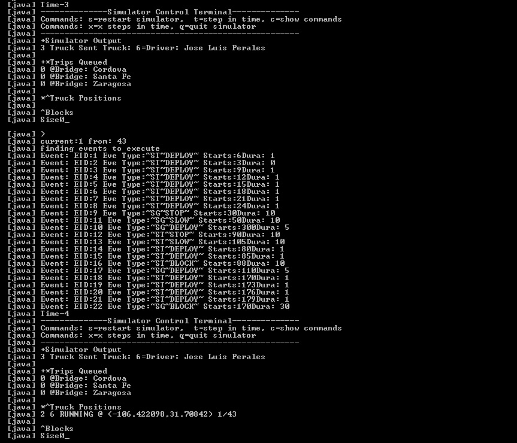
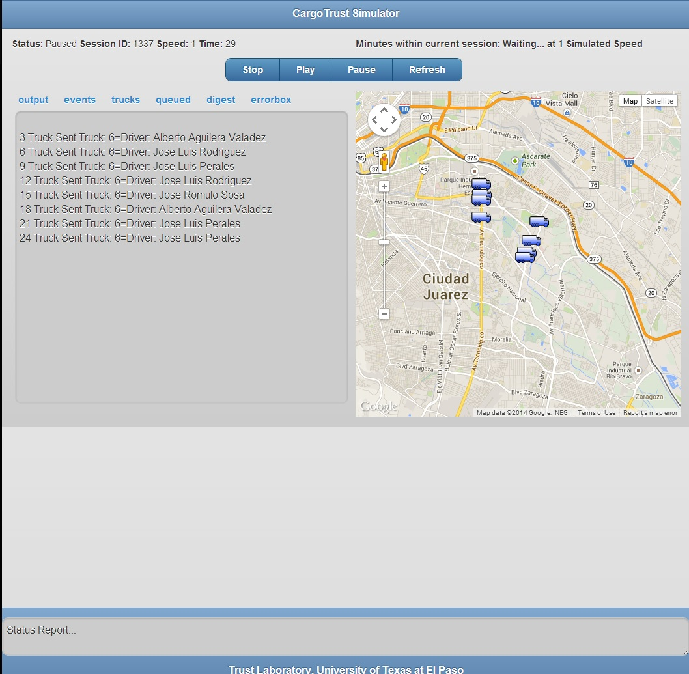

Running the Cargo Simulator
Now that you have the Cargo Simulator installed as explained in
Setting up the Cargo Trust Simulator
you are ready to run the simulator. This section will cover briefly how to run the simulator
both from the terminal and the jsp front end.
Running the Terminal version
Commands
- Restart simulator: This restarts the simulator with the same scenario loaded
- Steps in time: moves 1 minute forward in time, a simple enter does the same thing
- Show commands: shows the command screen again
- Steps in time: steps x minutes in time, the sintax is x {number of minutes in time}
- Quit Simulator: quits the terminal simulator

Running the WebApp version
Commands
- Stop: stops and restarts the simulator
- Play: starts the simulator if it's stopped, it resumes simulation if its paused.
- Pause: pauses the simulator, the simulation can be resumed with this.
- Refresh: refreshed the portal to the state of the simulator back-end
